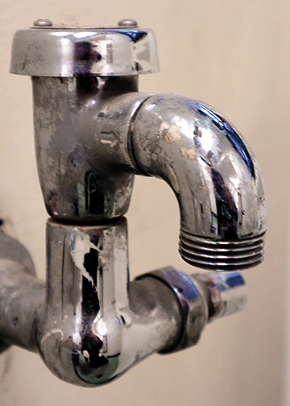

Lighting and framing was a big part of this picture.Since the object was reflective, lighting was very important. I wanted to show a very strong difference between the lightest parts and the darkest parts, which was achieved by darkening and lightening these parts respectively to increase the contrast in the colors. The object in the photo is also the main focus, so the photo was cropped in order to make the object fill the entirety of the frame. The background is less significant so I cropped the image in order to only see the emptiest part of the background, letting the object be the star of the show.